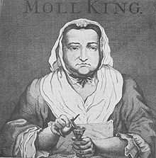

Artwork depicting a salon
As with most American history, women during the enlightenment were not seen as “equals” to men, with their ‘true’ role during the enlightenment being a frequently debated subject. While a lot of men during the Enlightenment that supported classical liberalism - an ideology which stated that everyone, no matter their color, class, etc has inalienable rights - proposed basic universal rights, women were specifically left out of this. Because of this, many women at the time would often face hardships such as suppression of their work. For example, a married female writer would need to have written consent from her husband in order to be able to publish whatever she was writing. As a result, places such as salons, coffeehouses, and debating societies - which were previously male-oriented only, but in the 1750s began developing into mixed-gender and sometimes women-only events - became common places for women to socialize. Common subjects in these settings would range from talking about their ideals, to their opinions on religion, and discussing equality between genders. Salons also provided a place for men and women to meet and have debates - verbal or written. On top of that, Salons finally created a place that allowed women to play the role of a leader. For example, women served the role of hostesses, decided which topics would be debated, and regulating the conversation. Coffeehouses were similar to Salons in the way that they were meant for socialization, except they initially were places where only men would meet up for conversation. Similar to Salons, the meet-ups were meant to share and debate information and common interests. However, coffeehouses where women were involved were different.  Female-oriented coffeehouses were said to break away from the traditions of male-oriented coffeehouses. One example of this would be the coffeehouse ran by Moll King, in which it was open late into the night, and treated their customers differently. King’s coffeehouse was meant to show that enlightenment women were capable of doing things, and were not the “timid” sex. As the enlightenment progressed, the subject of women’s inequality became a commonly debated topic between philosophers at the time such as John Locke, Jean-Jacques Rousseau, Nicolas de Condorcet, Adam Smith, and David Hume. Rousseau’s belief was that it was right for women to be obedient to men, while Locke and Condorcet believed that women should have equal rights as men, with Concordet going so far as to advocate female political equality. Men also weren’t the only ones making efforts such as these. In the 1790s, female philosophers and writers began their attempts to gain equal rights. For example, in 1790, Catherine Macaulay wrote The Letters on Education, which called for the education of women; in 1791, Olympe de Gouges published the Declaration of the Rights of Woman and the Female Citizen, which served as a challenge towards the political inequality between the genders; and in 1792, Mary Wollstonecraft composed A Vindication of the Rights of Woman, an essay which stated that it would be better for women to have education so that they could be useful, and encouraging women to go into fields that were previously male-only, such as medicine.